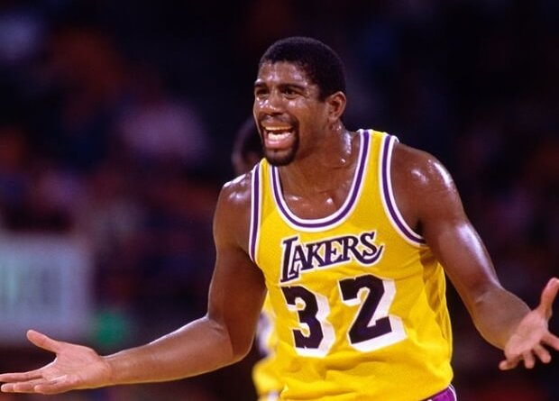
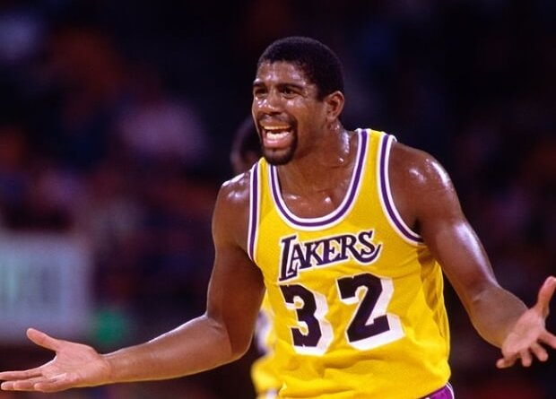
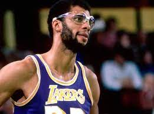
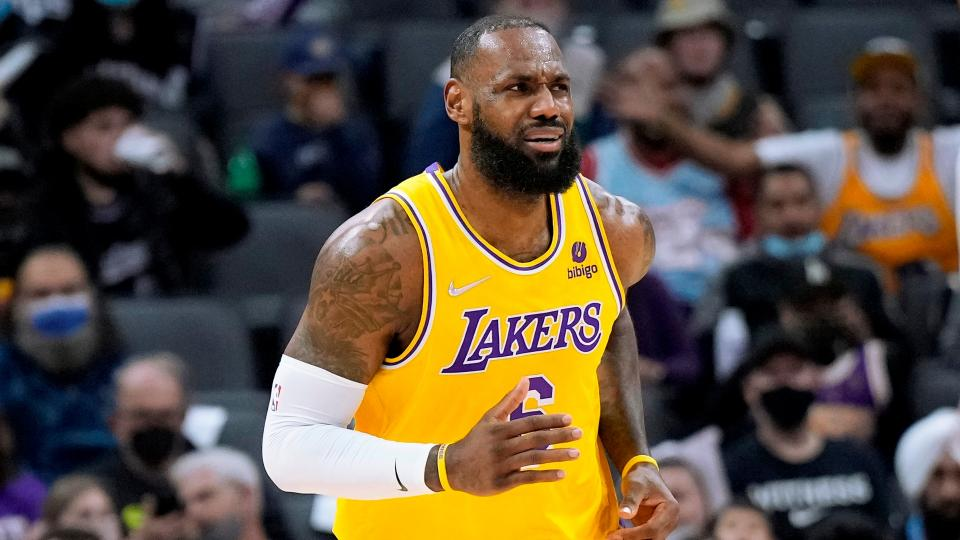

5.Magic Johnson
Títulos: 5. Promedios: 19’5 puntos, 7’2 rebotes y 11’2 asistencias. Revolucionó el juego siendo un base tan alto. Era un ganador, un pasador trascendente, una máquina de hacer jugadas para grabar y un triple-doble andante
Títulos: 5. Promedios: 19’5 puntos, 7’2 rebotes y 11’2 asistencias. Revolucionó el juego siendo un base tan alto. Era un ganador, un pasador trascendente, una máquina de hacer jugadas para grabar y un triple-doble andante
Títulos: 5. Promedios: 25 puntos, 5’2 rebotes y 4’7 asistencias. Por encima de su rendimiento estadístico el legado que deja Kobe Bryant son su mentalidad afliada y su ambición desenfrenada por convertirse en un maestro de este deporte

Títulos: 6. Promedios: 24’6 puntos, 11’2 rebotes y 3’6 asistencias.Nadie en la historia puede igualar su largo palmarés. Su gancho era imparable y se puede discutir que no fuera deslumbrante pero no que haya alguien mejor
Títulos: 4. Promedios: 27’1 puntos, 7’4 rebotes y 7’4 asistencias.Ha construido su juego en base a la potencia, pero su habilidad para el pase quizás sea su mejor virtud. Ha reinventado la forma de disfrutar de un atleta en su mejor punto de forma
Títulos: 6. Promedios: 30’1 puntos, 6’2 rebotes y 5’3 asistencias.Mientras ganaba se convertía en un icono global. Su juego traspasó la cancha y su brillantez en la pista definió los parámetros de una nueva generación de jugadores